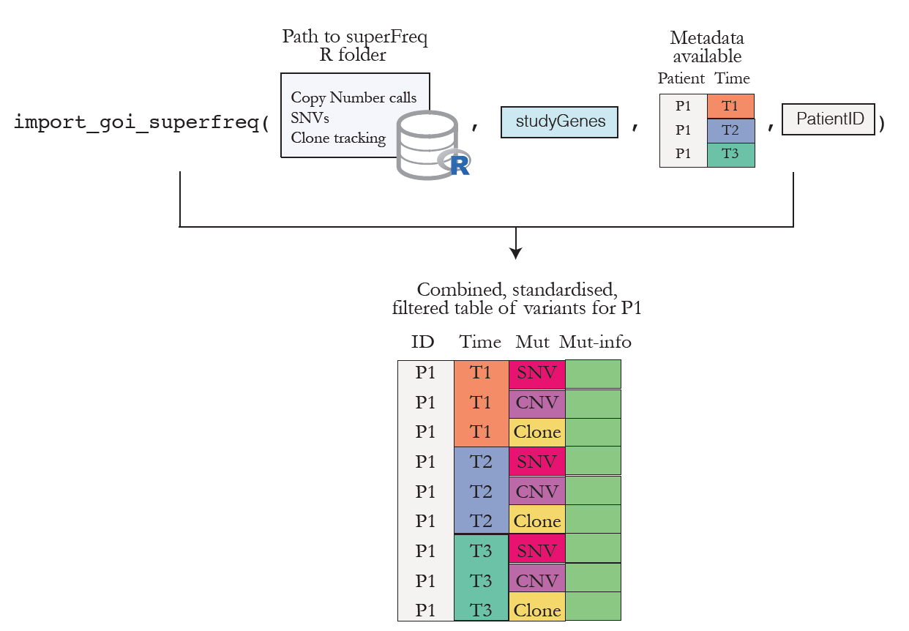

Main functionalities
Import variants from several callers
Variants from different callers can be imported in R and parsed into a data frame with standardised fields. See how fields are standardaised to know more about which fields from each callers are parsed. The functions which achieve this are:
-
import_goi_superfreq(): to import variants found on genes of interest called by superFreq, a caller that allows clonal tracking of cancer sequencing data. Figure 1 sketches how the function works.

Figure 1. Overview of the functionality to import and organise superFreq outputs.
-
parse_vcf_output(): which takes a Variant Call Format (VCF) file as input and outputs a parsed data frame with standardised names for the fields in theVCFfile. Currently,parse_vcf_output()can parse ouputs from the following callers run in tumour-only mode:GATK3 MuTect2,VarScan2,VarDictandFreebayes. It also enables parsing of the annotation field added by the Variant Effect Predictor.
See more examples in Get Started.
Combine variant calls from different samples within the same patient
-
import_any()combines and filters the variant calls (already imported intoR) from several samples collected for the same patient. This functions attempts to mimic in a very simplistic way what is performed within superFreq. Instead of filtering each variant callset separately for each sample, variants are filtered jointly by patient. This means that if a variant reaches minimal quality threshold at any time point, then it will be kept for all other time points. If a variant is not detected in some samples it will be filled with default values, e.g.zerovariant allele frequency. This allows to have complete information for a variant across time for one patient and to plot and evaluate the shift in VAF or depth over time.
Below is a graphic overview of how the output of parse_vcf_output() and import_any() interact. The example is based on files for one patient but the same can be extended to any patient.

Figure 2. Overview of the functionality to import and organise your VCF files.
See more examples in Get Started.